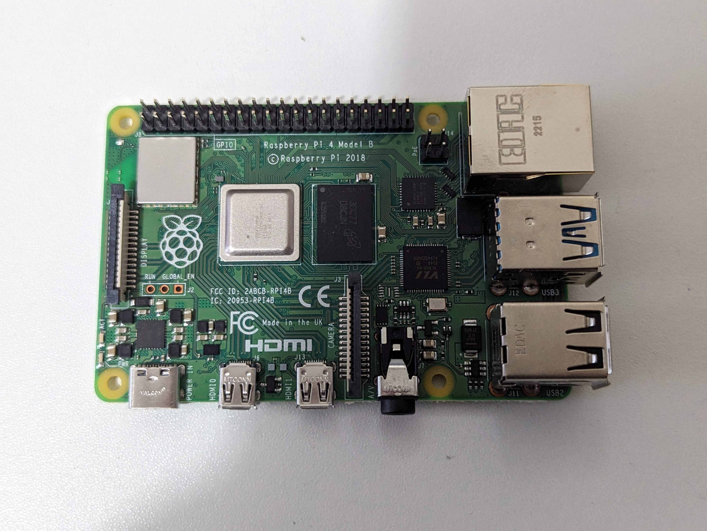
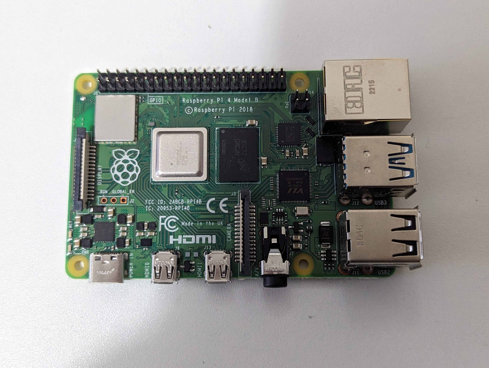

Our gallery is curated to help you understand the broad spectrum of electronics used in everyday and experimental projects. It's a visual compendium where enthusiasts, from novices to seasoned hobbyists, can explore, learn, and draw inspiration. This section is designed to not only showcase various electronic components, minicomputers, and prototype projects but also to illuminate the fascinating world of electronics that bridges theory with practical application. Browsing through the visuals, you can see real-world applications and configurations of different components and systems. This hands-on approach aims to enhance your understanding and inspire your own projects.
The 'Minicomputers' section provides a glimpse into some of the most versatile and widely used minicomputers in the maker community, such as the Adafruit Trinket, Raspberry Pi 4 Model B, Arduino UNO, and Arduino Mega. Each of these platforms offers unique features suitable for different levels of project complexity—from simple automation to intricate, multi-faceted systems. By featuring these devices, we aim to help you choose the right minicomputer for your needs, whether you're building a smart home system or an autonomous robot.
In the 'Components' segment, we display various electronic components like wires, a DB Meter, RTC, OLED display, SPS30, and SGP40. These components are the building blocks of many electronics projects. Understanding what each part does and seeing them in use can demystify aspects of electronic design and encourage you to experiment with creating circuits of your own.
Finally, the 'Prototypes' section showcases completed projects such as an RC Car and a Plant Meter. These examples demonstrate how various components and minicomputers can be integrated to create functional and innovative gadgets. This section is particularly intended to spark your creativity and perhaps even guide you through the stages of developing your own prototypes.
Whether you're here to find a specific component, learn about minicomputers, or explore potential project ideas, our gallery is organized to facilitate a deeper appreciation and understanding of the vast possibilities in the realm of electronics. Dive into our gallery to connect with the tools and projects that could shape your next big idea in electronics design and innovation. Enjoy your exploration!
Minicomputers
 



Raspberry Pi 4 Model B - This model marks a significant upgrade with a faster processor, multiple memory options, and dual-display support up to 4K. It's versatile for multimedia projects, browsing, and application development, offering enhanced connectivity and performance.
Arduino UNO - Known for its simplicity, the Arduino UNO is an open-source microcontroller board based on the ATmega328P. It features 14 digital input/output pins, making it a favorite among beginners and educational environments for its ease of use and extensive community support.
Arduino Mega - With more I/O lines, memory, and RAM, the Arduino Mega caters to more complex projects. Based on the ATmega2560, it provides 54 digital pins and 16 analog inputs, making it suitable for demanding applications like 3D printing and robotics.
These minicomputers cater to a wide range of needs, from basic crafts to intricate systems, demonstrating their broad utility in electronics.
Components

DB Meter - A decibel meter used to measure sound intensity. It is crucial for projects involving audio technology or noise level monitoring, helping ensure that devices comply with sound regulations and standards.
RTC (Real-Time Clock) - This component keeps track of the current time and date, even when the main device is powered off. It's widely used in applications where accurate timekeeping is necessary, such as in data loggers and alarms.
OLED (Organic Light Emitting Diode) - Known for its sharp and efficient display technology, OLEDs are used in many projects for displaying text, images, and animations with high contrast and clarity.
SPS30 - A high-precision air quality sensor that measures fine dust and particulate matter concentrations in the air. Ideal for environmental monitoring projects to assess air pollution levels.
SGP40 - A gas sensor for indoor air quality applications, capable of detecting volatile organic compounds (VOCs). It is useful in smart home systems for monitoring and improving indoor air quality.
These components are fundamental to a variety of electronic projects, serving functions from basic connectivity to complex environmental sensing, illustrating their indispensable role in modern electronics.
| Name | Weight (grams) | Average Price ($) |
|---|---|---|
| Wires | 50 | 5 |
| DB Meter | 120 | 25 |
| RTC | 10 | 7 |
| OLED | 20 | 15 |
| SPS30 | 30 | 40 |
| SGP40 | 25 | 20 |
Prototypes


Plant Meter - This prototype is designed to monitor the health of plants by measuring environmental factors such as soil moisture, light levels, and temperature. It’s a useful tool for gardeners and agricultural applications, helping ensure optimal plant care through precise, real-time data.
These prototypes exemplify practical applications of electronics and provide inspiration for visitors looking to embark on their own project developments, highlighting the creative and functional potential of combining various electronic components and systems.